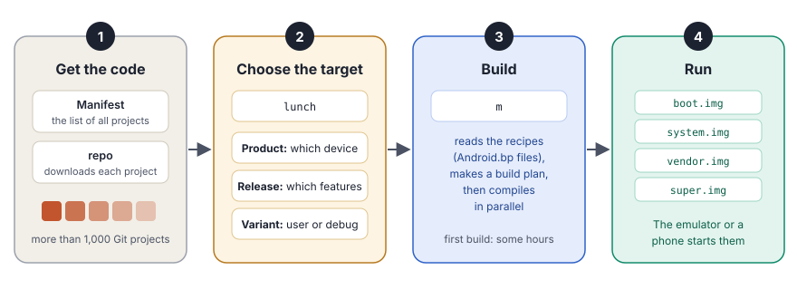
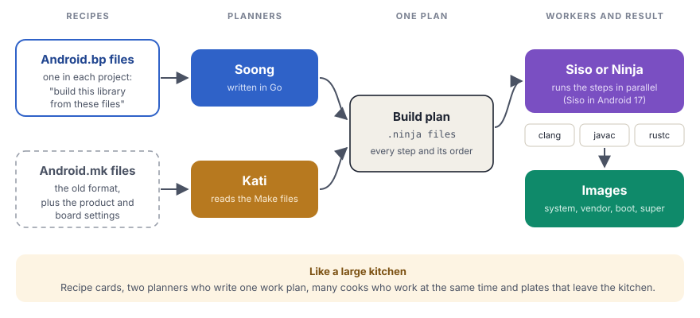

A tool with the name repo downloads more than one thousand Git projects. The build system then turns them into the images that a phone starts.
In chapter 1, you saw the five layers of Android. All these layers come from one large source tree. In this chapter, you follow the path from that source tree to Android on a screen: first you get the code, then you choose what to build, then you build it and start it.

Stage 1: Get the code
AOSP is not one Git repository. It is more than one thousand separate Git projects. The kernel tools, the framework, each system app and many outside libraries are separate projects. Each project keeps its own history.
Two things put these projects together:
- The manifest. An XML file that lists each project, the folder for it in the source tree and the version to use.
- The repo tool. A Python program that reads the manifest and downloads each project with Git. It also updates all projects with one command.
Think of a large library. The manifest is the catalog, with each book and its shelf. The repo tool is the librarian. It gets every book and puts it on the correct shelf. Git is the history inside each book, with each change and its author.
The source is very large. You need a Linux computer with a case-sensitive file system. You also need at least 400 GB of free disk space and at least 32 GB of RAM. More cores and more memory make the build much faster.
Stage 2: Choose what to build
One source tree can make Android for many devices. Before you build, you tell the build system what you want. Two commands do this.
First, source build/envsetup.sh adds the Android build commands to your terminal, for example lunch and m. Then lunch sets three choices:
| Choice | What it means | Example |
|---|---|---|
| Product | The device that you build for | sdk_phone64_x86_64 (the emulator on a normal computer) |
| Release | Which set of new features is on | trunk_staging |
| Variant | How open the build is for testing | user, userdebug or eng |
The variant is important. It decides how much access a person with the device gets:
| Variant | Used for | Root access | Debug tools |
|---|---|---|---|
user | Phones that people buy | None | None |
userdebug | Testing that is close to a real phone | Yes, with adb root | Partial |
eng | Development of the platform | Yes | All |
Stage 3: Build
One command starts the build: m. Behind this command, the build system works in three steps.
- Read the recipes. Each project has an
Android.bpfile. It describes what to build and from which files, for example "a library with the name liblog, from these C files". - Make one plan. A program with the name Soong reads all the
Android.bpfiles. A second program, Kati, reads the olderAndroid.mkfiles and the settings of the product. Together, they write one large build plan. The plan lists every step and the order of the steps. - Do the work. An executor reads the plan and runs the compilers, many at the same time. In Android 17, this executor is Siso. Before, it was Ninja. Both read the same plan.

Here is a very small Android.bp file. It tells the build system to make a program with the name hello_aosp from one C++ file:
cc_binary {
name: "hello_aosp",
srcs: ["hello.cpp"],
shared_libs: ["liblog"],
}You can build one module only, which is much faster than a full build:
| Command | What it builds |
|---|---|
m | The full system, with all the images |
m hello_aosp | Only the module with this name |
m Settings | Only the Settings app |
m systemimage | Only the system image |
The first full build takes some hours. After that, the build system builds only what changed, so a small change takes minutes.
Stage 4: The result
The build puts its output in the out/ folder. The images for your device are in out/target/product/<device>/. Each image becomes one part of the storage of the device:
| Image | What it holds |
|---|---|
boot.img | The Linux kernel and the first files that it needs |
system.img | The Android framework and the system apps |
vendor.img | The code for the chips of the device, for example the HALs |
super.img | One container that holds system, vendor and other parts. Android can change the size of each part inside it. |
userdata.img | An empty area for apps and user data |
Then the emulator command starts a virtual phone with your new images. On a real phone, a tool with the name fastboot writes the images to the storage.
Two special builds
Two parts of Android use their own build path:
- The kernel uses Kleaf, a build system that is based on Bazel. It builds the Generic Kernel Image (GKI), which many devices share. Chapter 5 tells you more.
- Mainline modules are packed as APEX files. Google can update an APEX file through the Play Store, without a full system update. Chapter 54 tells you more.
The build decides many security settings of the final device. Three of them are very important:
- The variant. A phone for real users must use the
uservariant. Auserdebugorengbuild gives root access and debug tools. If a maker ships such a build by mistake, any person with a USB cable can get full control. - The keys. AOSP signs a build with test keys by default. These keys are public. A maker must sign with its own private release keys. Otherwise, an attacker can sign a fake update or a fake system app that the device accepts.
- The source. The manifest fixes the version of each project. Thus, a team can know exactly which code went into a build. This helps when a security bug appears: the team can find each device that has the bad code.
For the curious: where the build system lives Optional
| Folder | What it holds |
|---|---|
build/blueprint/ | The parser and the framework for Android.bp files |
build/soong/ | Soong: the Go code for each module type, for example cc/, java/, rust/ and apex/ |
build/make/ | The older Make layer, envsetup.sh and the product settings |
out/soong/ | The build plan files and the intermediate files |
out/target/product/<device>/ | The final images |
The build system went through three generations. From 2008, Android used GNU Make with Android.mk files. This became too slow for a tree of this size, so from about 2016, Soong with Android.bp files took over most of the work. The Make layer stays for product settings and old modules. A move of the full platform build to Bazel started later, but Google stopped it. Today, only the kernel build (Kleaf) uses Bazel.
To see which executor runs your build, look at the SOONG_NINJA environment variable. The default value comes from build/soong/ui/build/config.go.
On any phone or emulator. Find out how the system on your device was built:
# user, userdebug or eng?
adb shell getprop ro.build.type
# release-keys (good) or test-keys?
adb shell getprop ro.build.tags
# The full name of the build
adb shell getprop ro.build.fingerprintBuild Android yourself. You need a Linux computer with at least 400 GB of free disk space and 32 GB of RAM. The download takes more than one hour. The first build takes some hours.
# 1. Get the code
mkdir aosp && cd aosp
repo init --partial-clone --no-use-superproject -b android-latest-release \
-u https://android.googlesource.com/platform/manifest
repo sync -c -j8
# 2. Choose the target: the emulator for a normal PC
source build/envsetup.sh
lunch sdk_phone64_x86_64-trunk_staging-eng
# 3. Build
m
# 4. Start your own Android
emulatorKey terms
- repo
- The tool that downloads and updates all AOSP projects.
- Manifest
- The XML file that lists each project and its folder.
- lunch
- The command that sets the product, the release and the variant.
- Variant
- user, userdebug or eng. It decides root access and debug tools.
- Android.bp
- The file that describes what to build in one project.
- Soong
- The program that reads all Android.bp files and makes the build plan.
- Siso, Ninja
- The programs that run the steps of the build plan.
- Image
- A file that becomes one part of the storage of the device.